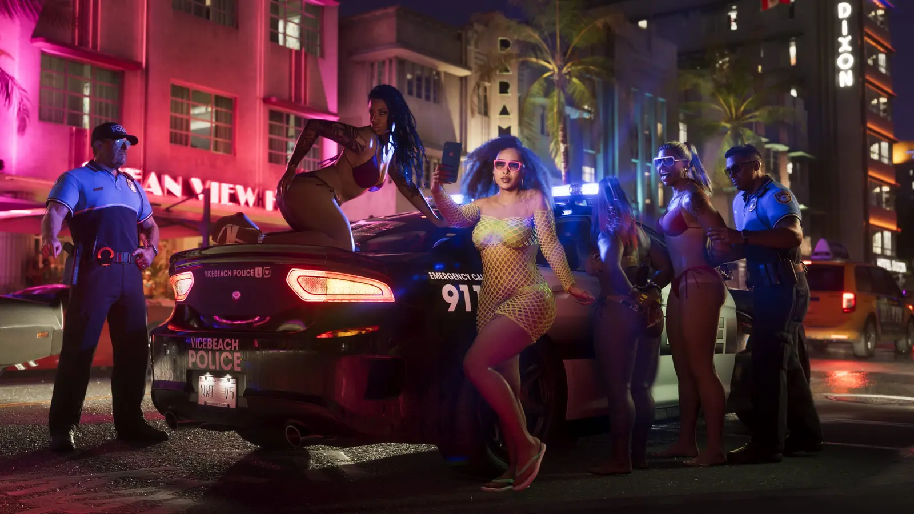

GTA 6: todas las dudas del lanzamiento
Respuestas cortas y al grano. Si quieres el detalle, cada una tiene su vídeo.
¿A qué hora sale GTA 6?
A las 00:00 del jueves 19 de noviembre en la hora de tu país, tanto en PS5 como en Xbox Series X|S. No es a la vez en todo el mundo: Nueva Zelanda es la primera y México y Centroamérica, las últimas. En España es la medianoche del miércoles al jueves. Cuenta atrás y tabla por países.
¿Cuánto ocupa? ¿Cómo hago hueco?
Rockstar pide hasta 212 GB libres, según la consola. En una PS5 de las primeras eso es casi un tercio del disco. Para hacer hueco:
- Borra los juegos que no tocas: se pueden volver a descargar cuando quieras.
- Mueve juegos de PS4 o de Xbox One a un disco duro externo USB.
- Si te falta mucho, la solución definitiva es un SSD interno (en PS5, con disipador).
¿Cuándo empieza la precarga?
Empezó el 10 de noviembre. En PS5 se abrió a las 00:00 de cada país y en Xbox a las 00:00 GMT a la vez en todo el mundo. Si lo has comprado en digital, ya puedes dejarlo descargado.
¿Sale en PC?
No de salida. GTA 6 llega a PS5, PS5 Pro y Xbox Series X|S. La versión de PC no tiene fecha anunciada; con GTA 5 hubo que esperar año y medio largo.
¿Hace falta PS Plus o el online de Xbox para jugar?
GTA 6 sale como una experiencia para un jugador, así que para jugar la historia no hace falta pagar el online. Del modo online todavía no hay fecha.
¿En qué consola se ve mejor? ¿Funciona en Series S?
Sale en las cuatro: PS5, PS5 Pro, Xbox Series X y Xbox Series S. Las diferencias de resolución y fluidez entre ellas las comparo aquí:
¿Estándar o Ultimate?
Hay dos ediciones. Antes de pagar la diferencia, mira qué trae de verdad cada una:
¿Espero al Black Friday para comprarlo?
Puede salirte caro esperar: te lo explico con números.
¿Es verdad que dan el mapa gratis?
Sí: Rockstar ofrece el póster del mapa en versión digital para imprimir, gratis, y una versión física por un precio simbólico.
¿Cómo funciona la policía?
Hay una sexta estrella, testigos que llaman a la policía y nuevas formas de escapar. Todo explicado aquí:
Lo que recomiendo para estar listo
Si te falta espacio o mando, estos son los que yo elegiría (vendidos por Amazon):
Como afiliado de Amazon, obtengo ingresos por las compras adscritas que cumplen los requisitos aplicables. Precios y disponibilidad pueden cambiar.
¿Te queda alguna duda?
Déjamela en los comentarios de cualquier vídeo y la añado aquí. Y suscríbete: el 19 subo gameplay desde el primer minuto.
Ir al canal de Godca